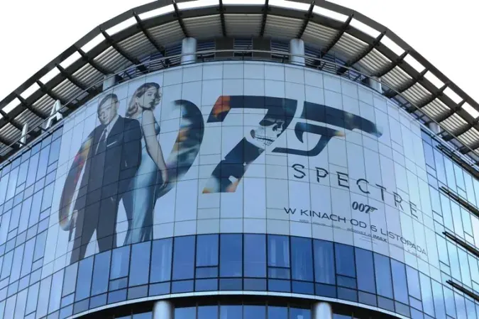
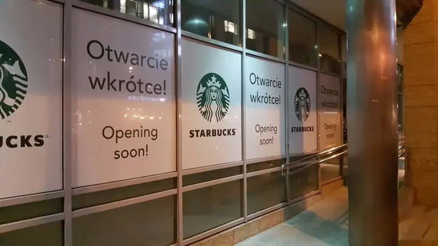
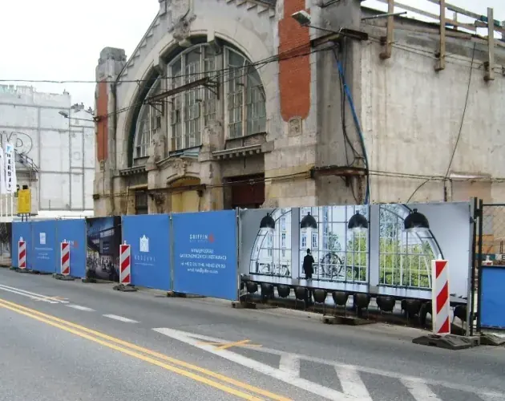
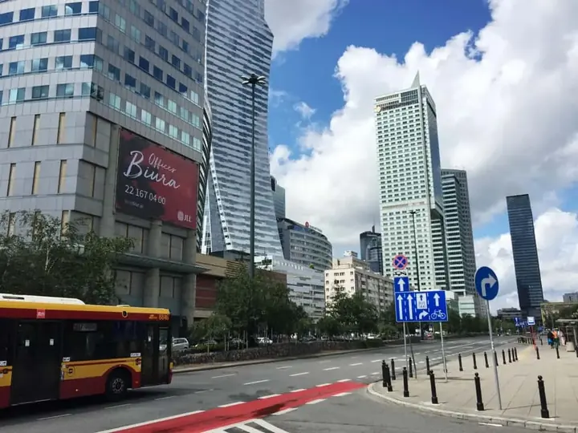
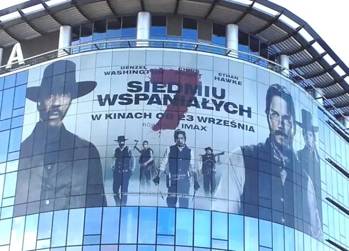
Wydruki wielkoformatowe
Banery, siatki, druk na foliach, fototapety, grafika dekoracyjna.
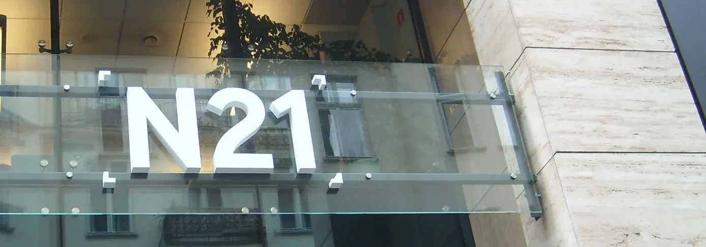
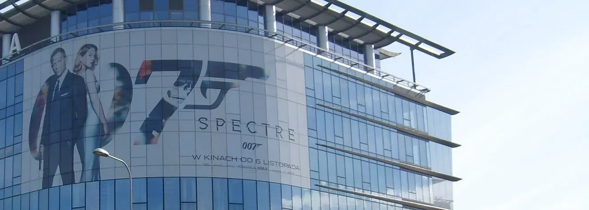
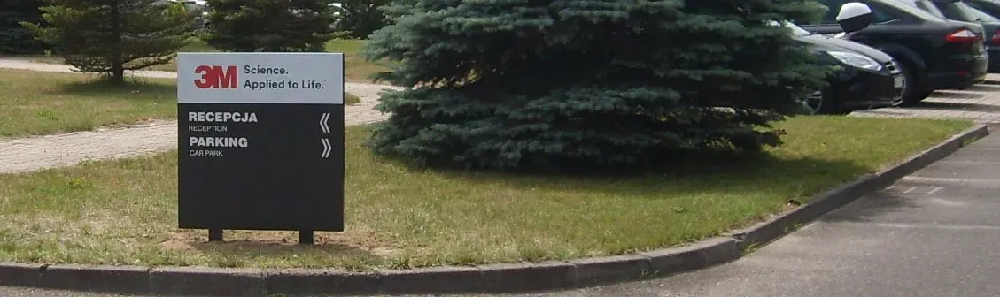
Litery przestrzenne, kasetony, pylony, oznakowanie biur i budynków, wydruki wielkoformatowe. Pracownia Reklamy GoART, Warszawa i okolice.
Projektujemy, wykonujemy i montujemy reklamę oraz oznakowanie - dla biurowców, firm, sklepów i parkingów.





Banery, siatki, druk na foliach, fototapety, grafika dekoracyjna.
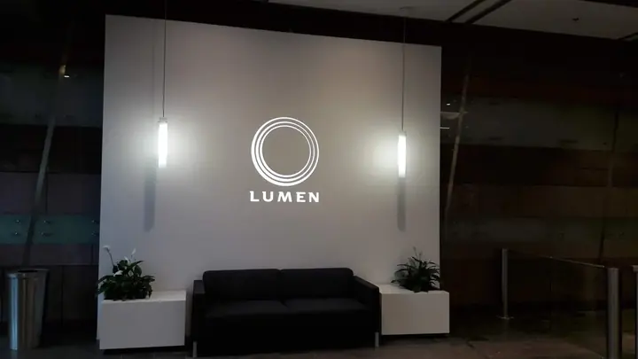
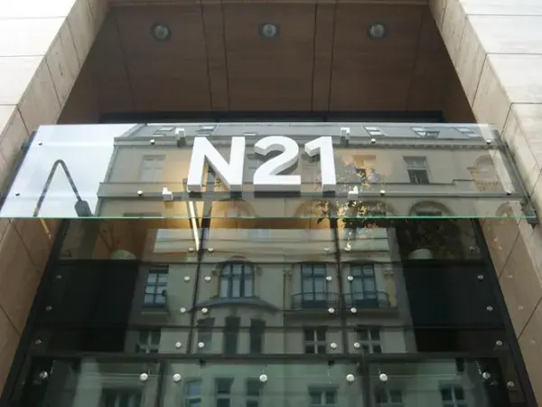
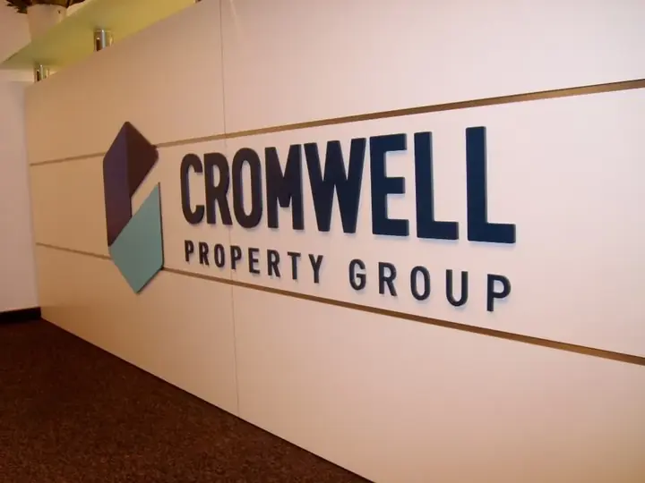
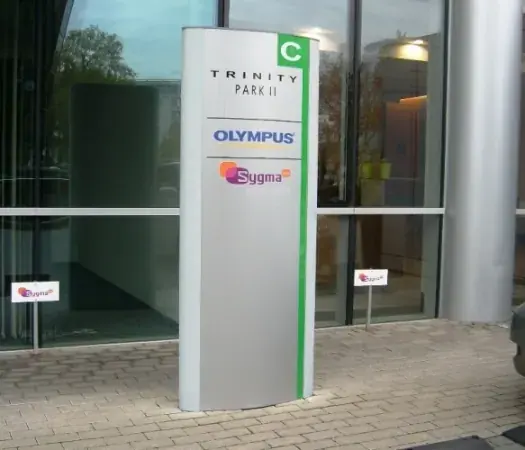
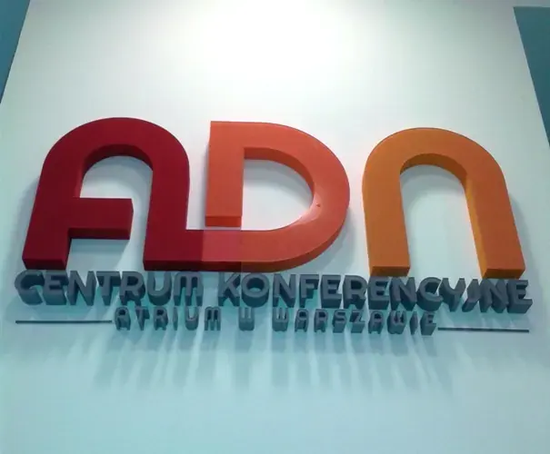
Litery przestrzenne, kasetony, semafory, totemy, pylony.
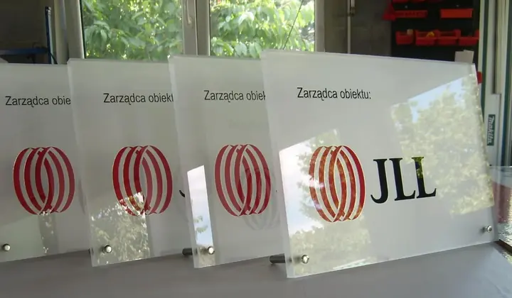
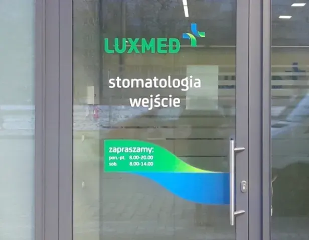
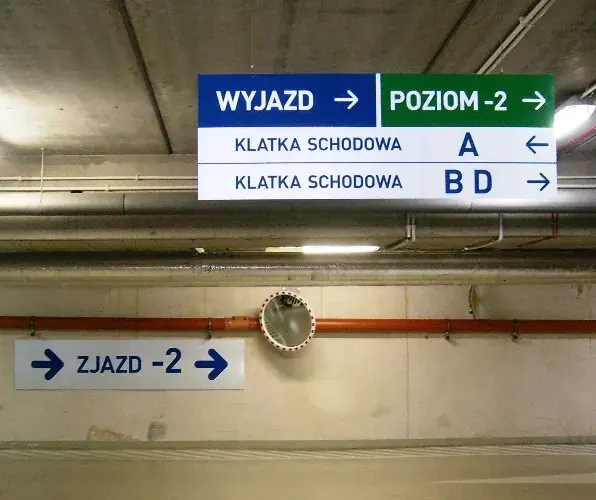
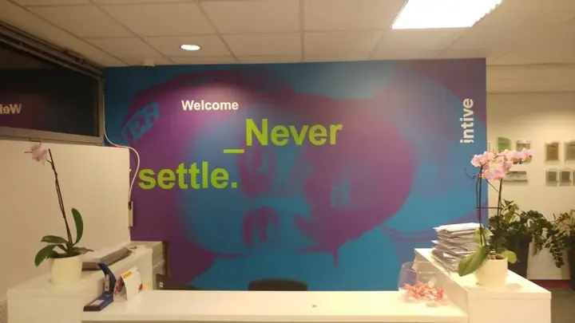
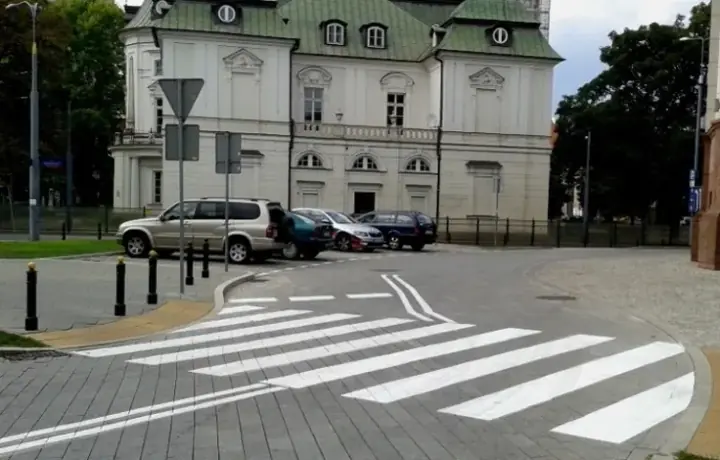
Tablice informacyjne, grafika ploterowa, oznakowanie parkingowe.
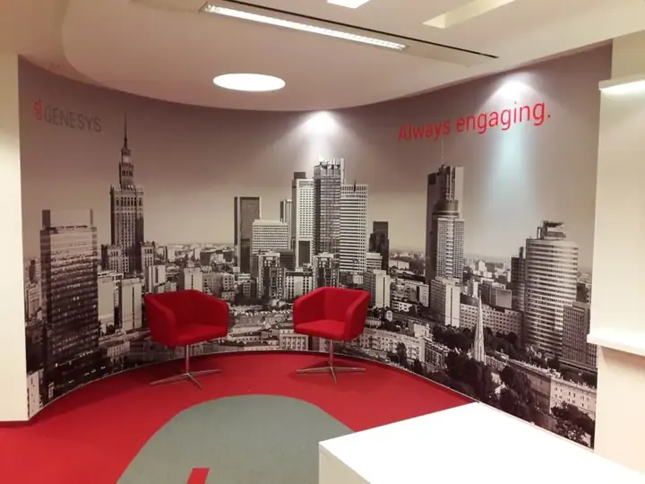
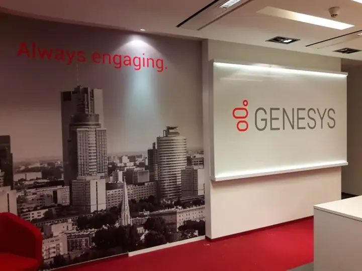
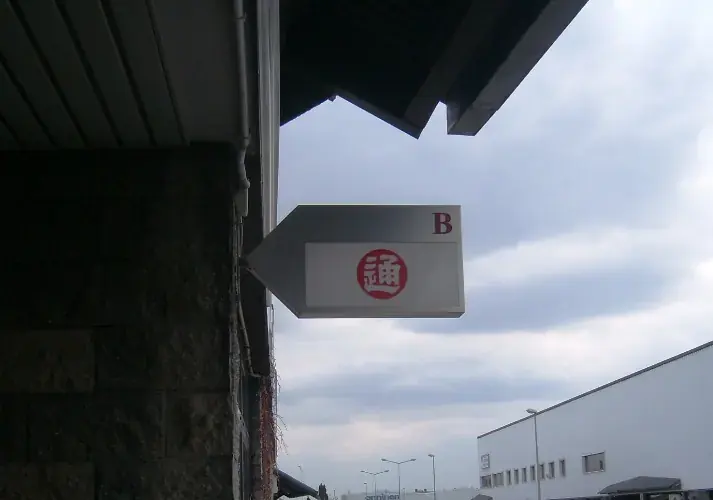
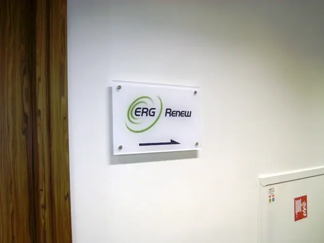
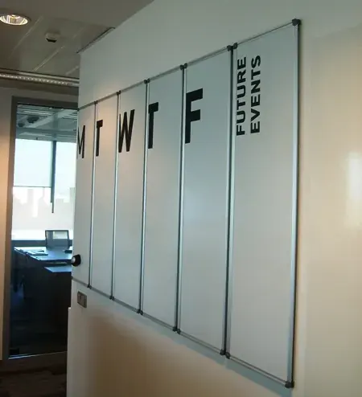
Kompleksowe oznakowanie firm, budynków, biurowców.
Pracownia Reklamy GoART przygotuje każdą realizację w całości: zaprojektuje, załatwi pozwolenia urzędowe, wykona, zamontuje i zadba o serwis. Montujemy też na wysokości - mamy techników z uprawnieniami alpinistycznymi.
ProjektPozwoleniaWykonanieMontażSerwis
Nietypowe realizacje i prototypy to coś, co lubimy najbardziej.
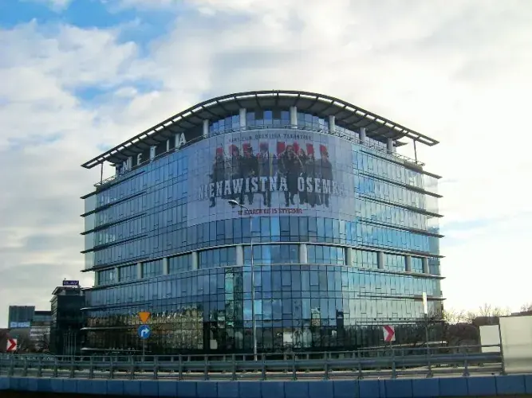
Nasze prace można zobaczyć w prestiżowych budynkach Warszawy. Wybierz rodzaj realizacji.
Wśród naszych klientów są zarządcy biurowców, agencje nieruchomości i znane marki.
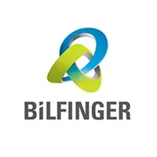
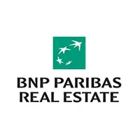
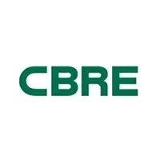
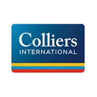
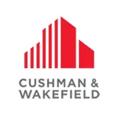
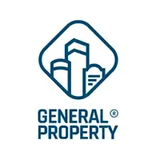
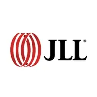
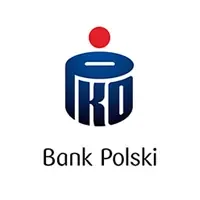
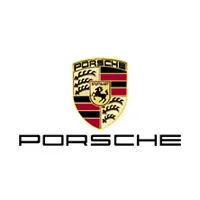
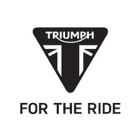
Napisz, co ma powstać i gdzie. Jeśli masz zdjęcie miejsca albo logo - dołącz je, przygotujemy propozycję szybciej.
Adres firmyGoART Michał Kurek
ul. Michała Andriollego 48/50 lok. 9, 05-400 Otwock
Działamy głównie w Warszawie i okolicach. Nasze realizacje są też w Poznaniu, Wrocławiu i Szczecinie.